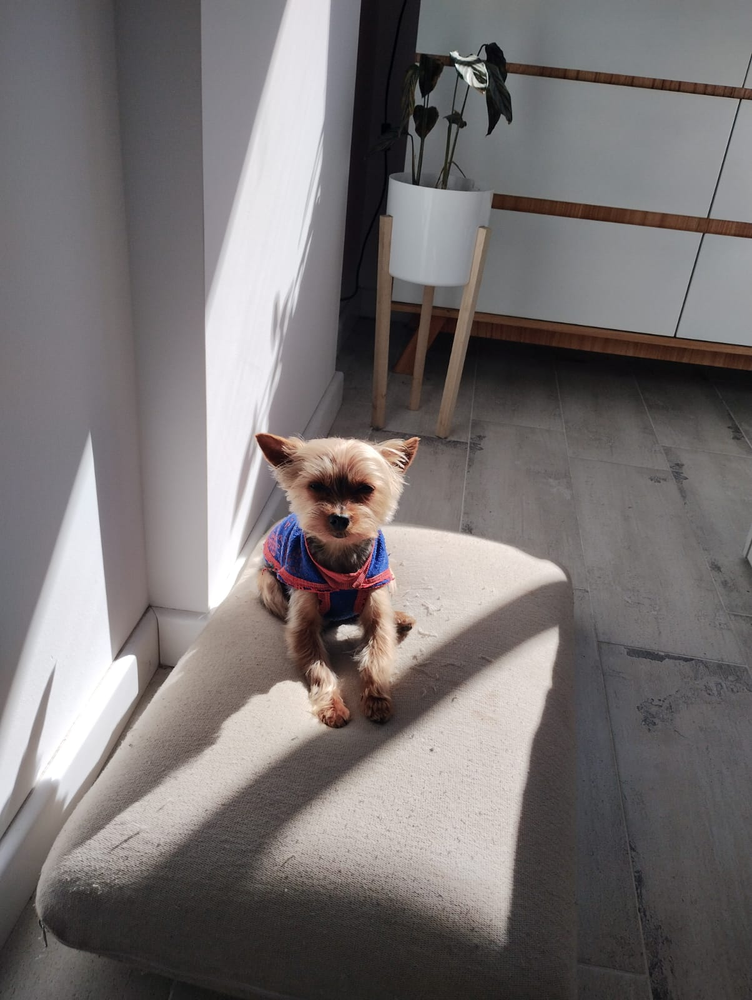
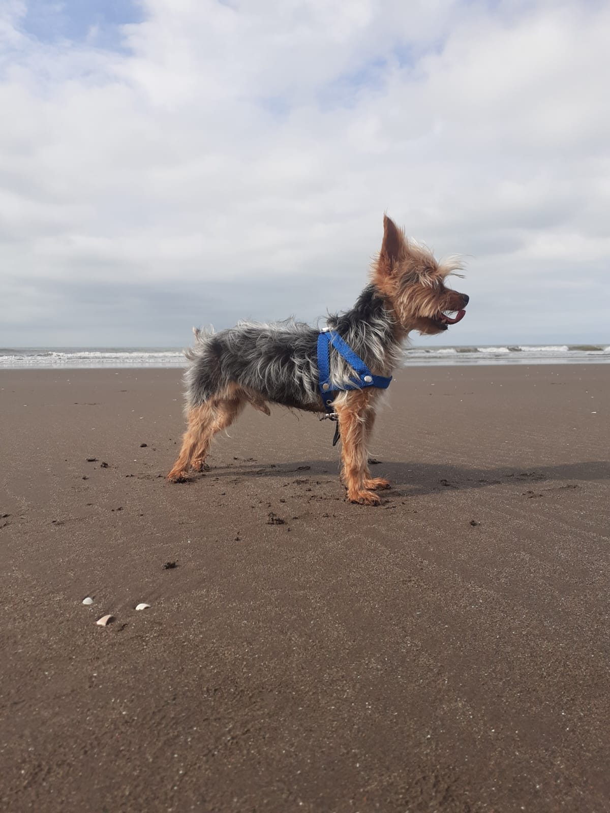
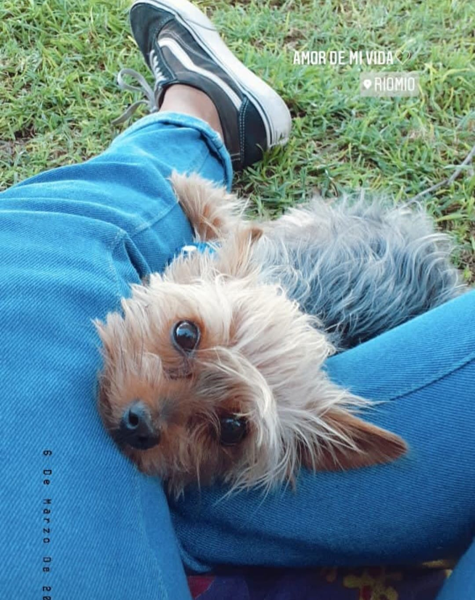

Tomar sol es de mis actividades preferidas
Fecha: 01/09/2024

Cada mañana, cuando el sol comienza a asomarse por la ventana de nuestro departamento,
yo ya estoy listo para mi momento de gloria.
Me encanta encontrar ese rincón especial donde la luz entra con más fuerza.
Allí me acomodo, estiro mis patitas y cierro los ojos mientras disfruto del calorcito
que me envuelve. Es como un abrazo cálido de sol que me hace sentir muy feliz y relajado.
No importa si hace frío o calor afuera, para mí, no hay nada mejor que empezar el día con un buen baño de sol. Es mi ritual matutino, y me hace sentir como el perrito más afortunado del mundo.
¡Así que si alguna vez ven un pequeño rayito de sol con patas, ya saben quién soy!
Mi primera vez conociendo el mar
Fecha: 27/08/2024

Hoy quiero contarles sobre mi primera vez en la playa.
Esto ocurrió en el año 2021, en Monte Hermoso. Fue la primera vez que vi el gran mar azul y sentí la brisa en mi hocico.
Al meter mis patitas en el agua por primera vez,
me sorprendió lo fría y divertida que era. Corrí por la arena, salté en las olas y me sentí muy feliz.
Fue un día lleno de nuevos olores y sensaciones, y me encantó cada minuto. ¡No puedo esperar para volver a la playa!
Caminatas y descanso en el parque
Fecha: 15/08/2024

Los paseos en la plaza son tranquilos y relajantes. Me gusta caminar despacio, disfrutar de los olores y observar todo a mi alrededor.
Pero también me gusta tirarme en el pasto y descansar.
Contame...